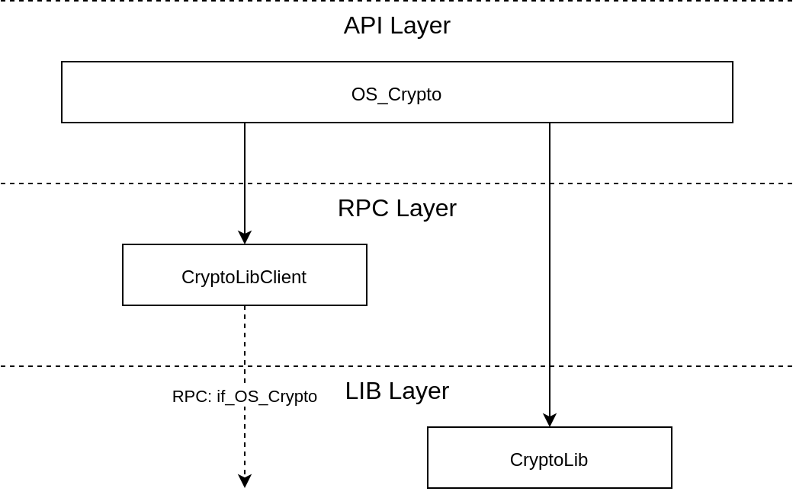
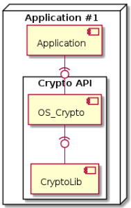
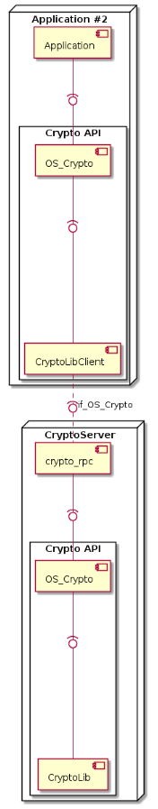
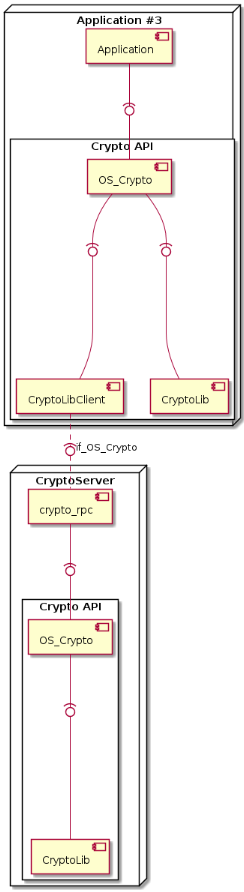

Crypto API¶
Overview¶
The Crypto API supports a set of cryptographic operations via a generic interface.
Info: The Crypto API can generate keys, random numbers, and has the means to
protect against side-channel attacks. To operate a Crypto API instance securely,
it requires access to a good source of entropy, for which it uses the
if_OS_Entropy interface.
Concepts¶
Here we introduce a few key concepts for the Crypto API.
Crypto Objects¶
The Crypto API manages a set of “crypto objects”, most of which are bound to
specific cryptographic primitives. So in order to use any of the API’s
functionality, the API itself and the corresponding object with specific
parameters needs to be instantiated (e.g., by calling the respective
init() – and later free() – function).
The following objects are currently supported:
CryptoAgreement: Can be used for key agreement schemes (e.g., DH)
CryptoCipher: Can be used for symmetric cryptographic operations (e.g., AES-ECB encryption)
CryptoDigest: Can be used to calculate hashes/digests (e.g., SHA256)
CryptoMac: Can be used to calculate cryptographic message authentication codes (e.g., HMAC-SHA256)
CryptoKey: Is a key object, holding key data specific to a crypto primitive (and mode of operation). Keys are imported into a Crypto API instance and then used with any of the crypto objects requiring a key (e.g., CryptoCipher).
Finally, there is also CryptoRng, which falls – strictly speaking – not under the object paradigm (it has no init/free) and can be used to obtain random numbers.
All of the above-mentioned objects are addressed through the Crypto API via abstract handles.
Local and Remote Instances¶
While the work with crypto objects and their handles always happens in the local component, the actual crypto objects may reside in another component. The latter case allows the execution of crypto operations in an isolated environment, which can be another CAmkES component or even a dedicated hardware module.
Based on the instantiation and configuration of a Crypto API instance, execution of crypto can either be enforced to always happen locally or always remotely or dependent on attributes of associated keys.
Locality of Keys¶
Keys can be considered as the most critical pieces of data used by the Crypto API. The Crypto API consequently allows us to work with keys without necessarily having access to the raw key data.
To indicate to the Crypto API when a key is created (i.e., generated or
imported) where the key’s data should be stored (i.e., locally or remotely),
keys have the keepLocal attribute:
keepLocal=true: The key can be in the address space of the Crypto API user, and thus the operation can be performed locally as well.keepLocal=false: The key should be kept in isolation (e.g., in the CryptoServer). Thus, operations using this key as well as the generation of this key will be delegated to a remote Crypto API instance.
Whether this attribute is evaluated depends on the instantiation mode of the Crypto API.
Instantiation Modes¶
The Crypto API can be instantiated in three modes in order to support the implementation of the required modes of operation.
OS_Crypto_MODE_LIBRARY: This mode configures a Crypto API instance such that every API call is directly mapped to a call of the underlying library.OS_Crypto_MODE_CLIENT: This mode configures a Crypto API instance such that every API call is directly mapped to an RPC call, which in turn is received by an RPC server which then executes the function with its own library instance – but in a separate component.OS_Crypto_MODE_KEY_SWITCH: This mode maps some API calls to a local library instance and some to a remote instance, based on these criteria:If the cryptographic operation does not involve a key (e.g., computation of a digest), the operation is performed locally.
If the cryptographic operation does involve a key, the
keepLocalattribute of the key is evaluated.
External Entropy Source¶
The Crypto API specifically requires “good random numbers” for a variety of operations:
To provide access to random data to a user
To generate keys
To protect against side-channel attacks
Internally, the Crypto API implementation uses a deterministic random number generator (DRBG) based on AES from which it extracts data for all three use cases. However, this DRBG is predictable as long as it is not fed with actual “random data” from a good source (typically this would be a hardware module based on a random process). If the DRBG is predictable, keys and random numbers can be predicted and side-channel protection measures will not work.
Consequently, the operational use of the Crypto API requires a good source of entropy.
Architecture¶
The implementation of the Crypto API is internally divided into three layers:
API layer: This layer implements the API functions as exported via the central API header directory.
RPC layer: This layer implements the RPC functionality, i.e., the RPC client and RPC server-side. The CAmkES interface connecting those two sides is denoted as
if_OS_Crypto.LIB layer: This is the actual implementation of cryptographic algorithms, which is further split into modules for each of the supported cryptographic primitives.
The following image shows this structure and also how the individual parts are linked together.

From this, we see that the crypto implementation layer can be used directly via the API layer, or indirectly through the RPC Client, which uses CAmkES-generated RPC calls to communicate with an RPC Server in another component (see also below).
The following sub-sections show how the layers are distributed across components when the Crypto API is instantiated in the respective mode.
Layout in OS_Crypto_MODE_LIBRARY Mode¶
In the OS_Crypto_MODE_LIBRARY mode, the Crypto API has a local
instance of the cryptographic library and uses just that instance to
execute any Crypto API calls. This is the simplest and most
straightforward mode.

Layout in OS_Crypto_MODE_CLIENT Mode¶
In the OS_Crypto_MODE_CLIENT mode, the Crypto API delegates all
cryptographic operations to a remote RPC endpoint which implements the
if_OS_Crypto interface. Typically, this remote instance would be
the CryptoServer component, which offers each
RPC client access to its own, local Crypto API instance.
Thus, all operations are executed in an isolated environment. Due to the
additional overhead of RPC communication between RPC Client and RPC
Server, this mode of operation is expected to be slower than the
OS_Crypto_MODE_LIBRARY mode.

Layout in OS_Crypto_MODE_KEY_SWITCH Mode¶
In OS_Crypto_MODE_KEY_SWITCH mode, a client’s Crypto API instance has a
local cryptographic library instance and a remote one.
This mode combines the best of the other two modes: Critical operations
(with keys having the keepLocal=false attribute) are performed in
isolation, all other operations are executed locally for best
performance.

Implementation¶
The Crypto API is an interface for all applications and services to use
for cryptographic operations. Internally, the API layer constitutes a
wrapper layer around the actual implementation of crypto functions and
inter-process communication for delegating operations to a component
that can transparently be used through the Crypto API (e.g., the
CryptoServer) – the respective interface is a CAmkES RPC interface
denoted as if_OS_Crypto.
In general, an application can implement its own cryptographic functions, if it has access to the key material. However, it is advised that all applications use the Crypto API to profit from a common architecture.
Usage¶
This is how the API can be instantiated in the system.
Declaration of API Library in CMake¶
The API library can be compiled by referencing this build target in the CMake file:
os_crypto: Build a library with code to work as a local library or RPC client.
Example¶
In the following example, we use the Crypto API in the most simple mode: only locally as a “normal” library. To do this, a client needs to be linked with the appropriate build target.
The Crypto API requires access to an EntropySource, which can be provided by
connecting the if_OS_Entropy interface to a component implementing it.
Please see the respective chapter on how to set up and connect an EntropySource
in CAmkES.
Instantiation of API in CMake¶
To use the Crypto API it needs to be pulled into the build of a component by adding one of the above-mentioned build targets.
DeclareCAmkESComponent(
Client
SOURCES
...
C_FLAGS
...
LIBS
...
os_crypto
)
Using the API in C¶
The following code (slightly abbreviated for clarity) instantiates the Crypto
API in local mode as a library. We assume that an EntropySource is connected to
the system below via the if_OS_Entropy interface (local references are
entropy_rpc and entropy_port respectively).
In this example, an instance of the Crypto API is used to generates an AES key and encrypt plaintext with AES in ECB mode.
// For Crypto API
#import "OS_Crypto.h"
// For RPCs and dataports
#include <camkes.h>
// Configuration of Crypto API in "LIBRARY" mode;
// assign entropy source as defined in CAmkES.
static OS_Crypto_Config_t cryptoCfg =
{
.mode = OS_Crypto_MODE_LIBRARY,
.entropy = IF_OS_ENTROPY_ASSIGN(
entropy_rpc,
entropy_port)
};
int run()
{
// Definition of a key-generation spec for a 128-bit AES key
static OS_CryptoKey_Spec_t aes128Spec =
{
.type = OS_CryptoKey_SPECTYPE_BITS,
.key = {
.type = OS_CryptoKey_TYPE_AES,
.params.bits = 128
}
};
// Declare handles for API and objects
OS_Crypto_Handle_t hCrypto;
OS_CryptoKey_Handle_t hKey;
OS_CryptoCipher_Handle_t hCipher;
// Declare inputs and outputs for crypto operation
uint8_t pt[16] = "0123456789abcdef";
uint8_t ct[16];
size_t ptLen = 16, ctLen = 16;
// Init Crypto API instance in ROUTE mode
OS_Crypto_init(&hCrypto, &cryptoCfg);
// Generate a new AES key based on the spec provided above
OS_CryptoKey_generate(&hKey, hCrypto, &aes128Spec);
// Create a cipher object to encrypt data with AES in ECB (does not require an
// IV!)
OS_CryptoCipher_init(
&hCipher,
hCrypto,
hKey,
OS_CryptoCipher_ALG_AES_ECB_ENC,
NULL,
0
);
// Encrypt a plaintext of some size
OS_CryptoCipher_process(hCipher, pt, ptLen, ct, &ctLen);
// Free everything
OS_CryptoCipher_free(hCipher);
OS_CryptoKey_free(hKey);
OS_Crypto_free(hCrypto);
}